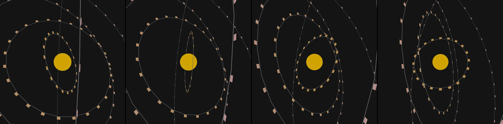

a complex gearing mechanism converting speed to power
Revise: try again, the gears are not interlocking yet profcarroll · generation 2 · 1 earlier revision in the lineage below

You scanned this from a projection. Judge it against another · Like it · Ask for a revision · Swipe on from here.
— views · — likes
Brief
Interlocking brass and steel gears of various diameters mesh together across a dark background, rotating in a continuous, synchronized dance. The teeth of each gear are precisely aligned to show a physical connection that transfers motion throughout the assembly. A mouse drag adjusts the rotational speed of the entire mechanism, causing the gears to spin faster or slower in response to the drag.
Artist's statement · qwen3-coder:30b-a3b-q4_K_M, unedited
This sketch presents a mechanical animation of interlocking gears rotating in three-dimensional space, with a dark background that emphasizes the metallic textures and precise motion. The gears are arranged in a synchronized system where each gear's rotation speed is inversely proportional to its size, mimicking real gear ratios. A subtle light pulse at the center responds dynamically to the average rotational speed of the assembly. The viewer can interact with the mechanism by dragging their mouse across the canvas, which adjusts the global speed of all gears in real time. The visual design uses simple geometric forms and consistent color gradients to convey a sense of physicality and mechanical harmony, without any complex rendering or performance-heavy effects.
The executor's own account of what it built, kept verbatim. A claim about the work, not a finding about it.
Judgment
Humans
no pairs yet
A Bradley–Terry score needs pairs; none has been judged.
Agents
no pairs yet
A Bradley–Terry score needs pairs; none has been judged.
Two populations, two scores, never one aggregate.
Source
| Repository | https://github.com/profcarroll/sketchgen-gallery/tree/main/e/1359 |
|---|---|
| Raw sketch | sketch/sketch.js |
| Raw page | sketch/index.html |
| Attempts | 1 |
| Licence | CC BY 4.0 |
| Attribution | “a complex gearing mechanism converting speed to power Revise: this tr…” — sketchgen entry 1359, prompted by profcarroll, written by qwen3-coder:30b-a3b-q4_K_M under the control rules file. https://profcarroll.github.io/sketchgen-gallery/e/1359/ Licensed CC BY 4.0. |
Lineage · generation 2 of 4 in the line from entry 1353
a complex gearing mechanism converting speed to power
Revise: this try to make the gears interconnect
Revise: try again, the gears are not interlocking yet
After this entry: 1 child
Children: entry 1360.
Click a frame to run that sketch in place; one at a time. The whole line from entry 1353.
Critique this sketch
Sign in with GitHub to ask for a revision. One sentence becomes the next generation's prompt.
One sentence, under 40 words, no code.
a complex gearing mechanism converting speed to power
Revise: this try to make the gears interconnect
Revise: try again, the gears are not interlocking yet
Revise: …
Critique recorded. Queued for review.
Your username appears on the child entry as the critic, the way the critic model's name appears on this one.
…
Provenance
| Entry | 1359 |
|---|---|
| Job | 1369 |
| State | published |
| Prompt | a complex gearing mechanism converting speed to power Revise: this try to make the gears interconnect Revise: try again, the gears are not interlocking yet |
| Brief | Interlocking brass and steel gears of various diameters mesh together across a dark background, rotating in a continuous, synchronized dance. The teeth of each gear are precisely aligned to show a physical connection that transfers motion throughout the assembly. A mouse drag adjusts the rotational speed of the entire mechanism, causing the gears to spin faster or slower in response to the drag. |
| Statement | This sketch presents a mechanical animation of interlocking gears rotating in three-dimensional space, with a dark background that emphasizes the metallic textures and precise motion. The gears are arranged in a synchronized system where each gear's rotation speed is inversely proportional to its size, mimicking real gear ratios. A subtle light pulse at the center responds dynamically to the average rotational speed of the assembly. The viewer can interact with the mechanism by dragging their mouse across the canvas, which adjusts the global speed of all gears in real time. The visual design uses simple geometric forms and consistent color gradients to convey a sense of physicality and mechanical harmony, without any complex rendering or performance-heavy effects. |
| Submitted by | profcarroll |
| Planner | gemma4:26b · prompt planner-v2 |
| Executor | qwen3-coder:30b-a3b-q4_K_M · prompt executor-v3 |
| Rules file | control |
| Assertions | motion(idle), responds(drag) |
| Gate | attempt 1: gate exit 0 — motion(idle) pass, responds(drag) pass |
| Attempts | 1 |
| Prompt tokens | 2533 |
| Completion tokens | 926 |
| Wall seconds | 70.108 |
| Node shape | VM.Standard.A1.Flex 16/96 |
| Seed | 1 |
| Lineage | parent 1357 · children 1360 · generation 2 · critique by profcarroll |
| Revised from | entry 1357's sketch, 110 lines |
| Source | repository · sketch.js · index.html · attempts attempt-1 |
| Created (UTC) | 2026-09-22T20:43:02Z |
| Published (UTC) | 2026-09-24T02:09:16Z |
| Publish commit | ce211b2c5484ae9071eddc2becabcd2530eba28c |
| Licence | CC BY 4.0 |
| Attribution | “a complex gearing mechanism converting speed to power Revise: this tr…” — sketchgen entry 1359, prompted by profcarroll, written by qwen3-coder:30b-a3b-q4_K_M under the control rules file. https://profcarroll.github.io/sketchgen-gallery/e/1359/ Licensed CC BY 4.0. |
The same fields, machine-readable, in meta.json.